用法：A型题点选项即判；X型题先多选、再点【判卷】；答完自动展开解析。刷完本课再过一遍底部【本课速记卡】，效果最好。
一、食管癌7 题
A型·单选Q1P3 · 食管癌
食管癌最好发的部位是
答案与解析
答案：D
好发于食管三个生理性狭窄部，以胸中段最多见。
📖 讲义定位：P3 · 食管癌
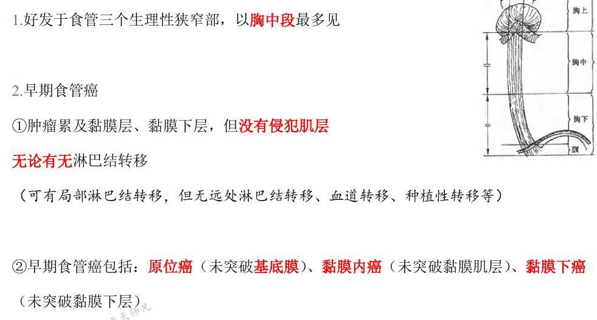
📷 讲义原图 · P3 · 食管癌
A型·单选Q2P3 · 早期食管癌
早期食管癌指的是
答案与解析
答案：A
早期食管癌：累及黏膜层/黏膜下层、未侵肌层，无论有无淋巴结转移（可有局部淋巴结转移，但无远处转移）。
📖 讲义定位：P3 · 早期食管癌
X型·多选Q3P3 · 早期食管癌
早期食管癌包括
答案与解析
答案：ABC
早期食管癌＝原位癌＋黏膜内癌＋黏膜下癌；已侵犯肌层则属中晚期（D 错）。
📖 讲义定位：P3 · 早期食管癌
A型·单选Q4P3 · 中晚期食管癌
中晚期食管癌大体类型中，纤维组织少、质地较软的是
答案与解析
答案：B
髓质型：纤维组织少、软，最多见；缩窄/硬化型纤维组织多、硬（环形狭窄致梗阻）。
📖 讲义定位：P3 · 中晚期食管癌
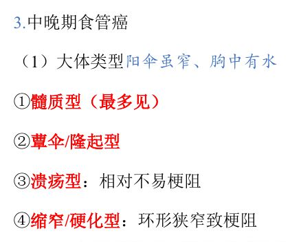
📷 讲义原图 · P3 · 中晚期食管癌
A型·单选Q5P3 · 中晚期食管癌
中晚期食管癌中，梗阻症状相对不易出现的大体类型是
答案与解析
答案：C
溃疡型相对不易梗阻；缩窄/硬化型环形狭窄致梗阻。
📖 讲义定位：P3 · 中晚期食管癌
A型·单选Q6P4 · 食管癌组织学
食管下段鳞状上皮被柱状上皮取代（Barrett 食管）的意义是
答案与解析
答案：C
Barrett 食管＝腺上皮化生（多继发于胃食管反流病），是食管腺癌的癌前病变，需定期胃镜复查。
📖 讲义定位：P4 · 食管癌组织学
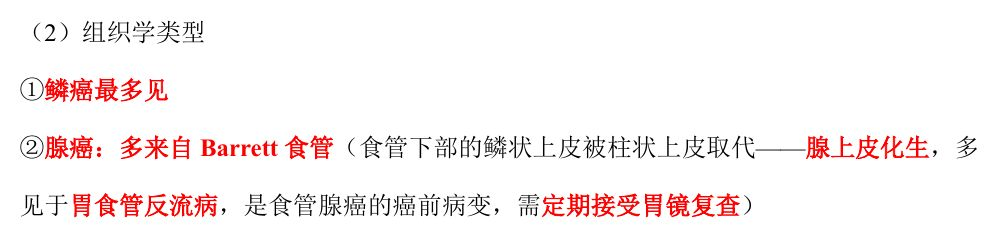
📷 讲义原图 · P4 · 食管癌组织学
A型·单选Q7P4 · 食管癌组织学
食管癌最多见的组织学类型是
答案与解析
答案：A
鳞癌最多见；腺癌多来自 Barrett 食管。
📖 讲义定位：P4 · 食管癌组织学
二、胃癌19 题
A型·单选Q8P4 · 胃癌
胃癌的好发部位是
答案与解析
答案：B
胃癌好发于胃窦小弯侧。
📖 讲义定位：P4 · 胃癌
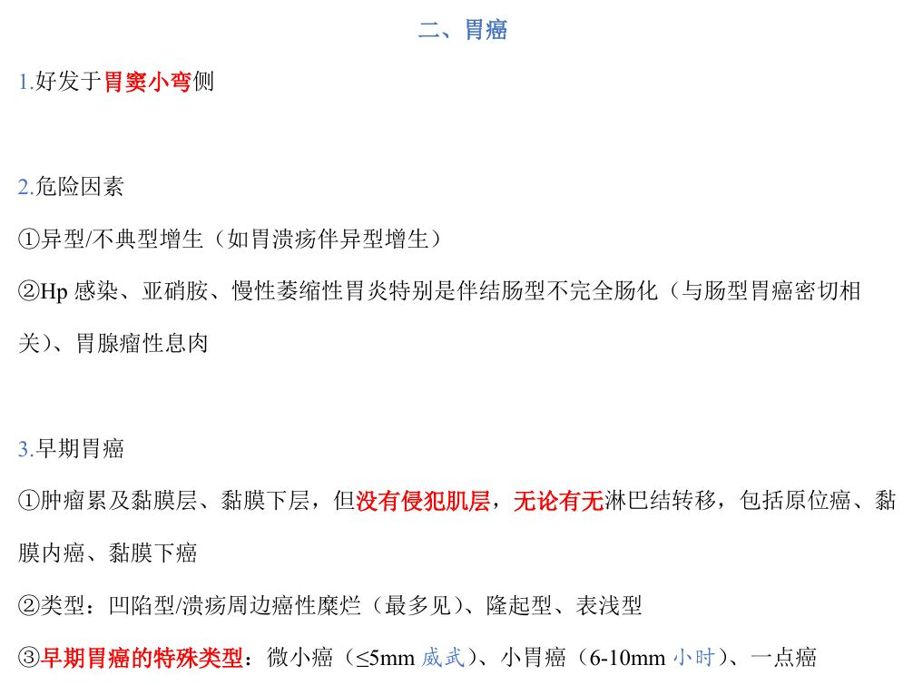
📷 讲义原图 · P4 · 胃癌
X型·多选Q9P4 · 胃癌
胃癌的危险因素包括
答案与解析
答案：ABD
危险因素：异型/不典型增生、Hp 感染、亚硝胺、慢性萎缩性胃炎（尤其伴结肠型不完全肠化）、胃腺瘤性息肉；急性单纯性胃炎与之无关（C 错）。
📖 讲义定位：P4 · 胃癌
A型·单选Q10P4 · 早期胃癌
早期胃癌指的是
答案与解析
答案：D
早期胃癌＝原位癌＋黏膜内癌＋黏膜下癌；可有局部淋巴结转移（无远处转移）。
📖 讲义定位：P4 · 早期胃癌
X型·多选Q11P4 · 早期胃癌
关于早期胃癌，下列叙述正确的有
答案与解析
答案：ABD
革囊胃是弥漫浸润型中晚期胃癌的表现（C 错）。
📖 讲义定位：P4 · 早期胃癌
A型·单选Q12P4 · 早期胃癌
早期胃癌最多见的大体类型是
答案与解析
答案：B
早期胃癌类型：凹陷型（最多见）、隆起型、表浅型。
📖 讲义定位：P4 · 早期胃癌
A型·单选Q13P4 · 早期胃癌
早期胃癌中，直径≤5mm 者称为
答案与解析
答案：A
微小癌≤5mm；小胃癌 6–10mm；另有『一点癌』。
📖 讲义定位：P4 · 早期胃癌
A型·单选Q14P5 · 中晚期胃癌
中晚期胃癌最多见的大体类型是
答案与解析
答案：D
溃疡型最多见；浸润型弥漫浸润可致革囊胃（预后最差）。
📖 讲义定位：P5 · 中晚期胃癌
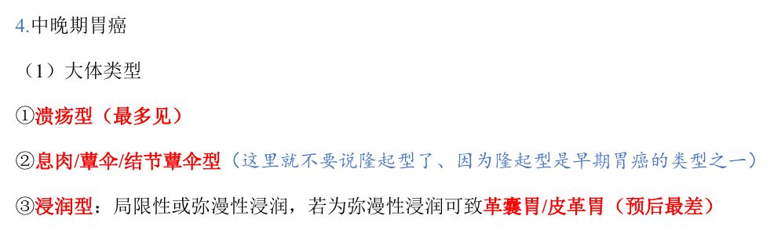
📷 讲义原图 · P5 · 中晚期胃癌
A型·单选Q15P5 · 中晚期胃癌
『革囊胃』对应的胃癌类型及预后是
答案与解析
答案：C
弥漫性浸润→革囊胃/皮革胃，预后最差。
📖 讲义定位：P5 · 中晚期胃癌
A型·单选Q16P5 · 胃癌组织学
胃癌中能分泌大量黏液、肉眼呈胶冻样外观（黏液成分＞50%）的组织学类型是
答案与解析
答案：B
黏液腺癌/胶样癌：黏液＞50%、胶冻样外观，仍属组织学类型；黏液潴留在细胞内＝印戒细胞癌。
📖 讲义定位：P5 · 胃癌组织学
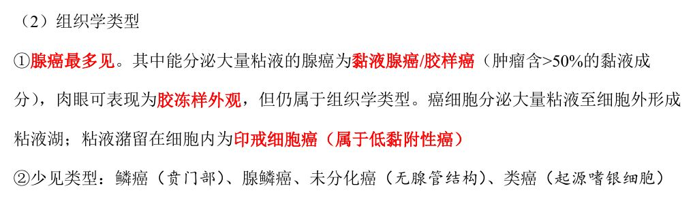
📷 讲义原图 · P5 · 胃癌组织学
A型·单选Q17P5 · 胃癌组织学
印戒细胞癌的黏液位于
答案与解析
答案：C
黏液潴留在细胞内→印戒细胞癌（属低黏附性癌）；黏液分泌至细胞外形成黏液湖→黏液腺癌。
📖 讲义定位：P5 · 胃癌组织学
A型·单选Q18P6 · 胃癌转移
胃癌最早、最常见的转移途径是
答案与解析
答案：D
最早最常见为淋巴转移；晚期血道最常转移至肝脏。
📖 讲义定位：P6 · 胃癌转移
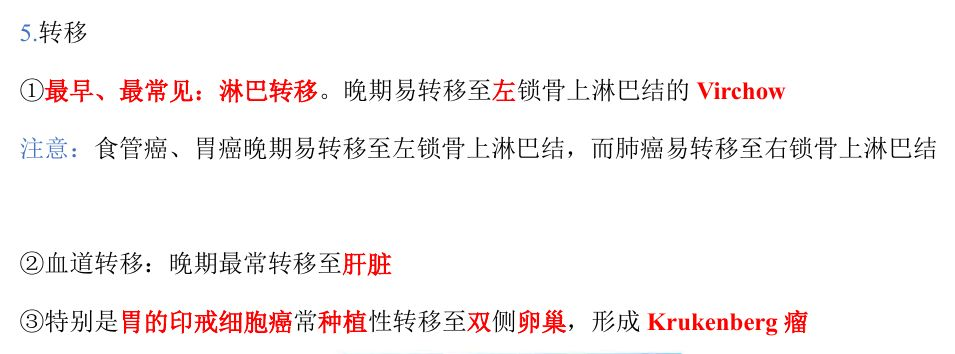
📷 讲义原图 · P6 · 胃癌转移
A型·单选Q19P6 · 胃癌转移
『Virchow 淋巴结』指的是
答案与解析
答案：A
食管癌、胃癌晚期易转移至左锁骨上淋巴结（Virchow）；肺癌易转移至右锁骨上淋巴结。
📖 讲义定位：P6 · 胃癌转移
A型·单选Q20P6 · 胃癌转移
双侧卵巢发现含黏液（印戒样）细胞的转移性癌（Krukenberg 瘤），原发灶最可能是
答案与解析
答案：D
胃的印戒细胞癌常种植性转移至双侧卵巢，形成 Krukenberg 瘤。
📖 讲义定位：P6 · 胃癌转移
配伍题 · 共用选项，每题选一个
A. 胃溃疡
B. 胃癌（溃疡型）
C. 两者均可
D. 两者均无
Q21P6 · 胃癌溃疡型 VS 胃溃疡
外形呈圆形或椭圆形
答案与解析
答案：A
良性胃溃疡多圆形/椭圆形；胃癌溃疡型呈火山口或皿状。
📖 讲义定位：P6 · 胃癌溃疡型 VS 胃溃疡
Q22P6 · 胃癌溃疡型 VS 胃溃疡
龛影位于胃腔轮廓之内
答案与解析
答案：B
胃癌溃疡型龛影位于胃腔轮廓之内；胃溃疡龛影位于轮廓之外。
📖 讲义定位：P6 · 胃癌溃疡型 VS 胃溃疡
Q23P6 · 胃癌溃疡型 VS 胃溃疡
黏膜皱襞呈放射状向溃疡集中
答案与解析
答案：A
胃溃疡周围黏膜皱襞放射状向溃疡集中（瘢痕牵拉）；胃癌呈皱襞中断、结节状肥厚。
📖 讲义定位：P6 · 胃癌溃疡型 VS 胃溃疡
Q24P6 · 胃癌溃疡型 VS 胃溃疡
边缘不整齐、隆起
答案与解析
答案：B
胃癌溃疡型边缘不整齐、隆起；胃溃疡边缘整齐、不隆起。
📖 讲义定位：P6 · 胃癌溃疡型 VS 胃溃疡
Q25P6 · 胃癌溃疡型 VS 胃溃疡
胃酸明显下降甚至缺乏
答案与解析
答案：B
胃癌溃疡型胃酸明显↓（缺乏）；胃溃疡多正常或↓。
📖 讲义定位：P6 · 胃癌溃疡型 VS 胃溃疡
Q26P6 · 胃癌溃疡型 VS 胃溃疡
直径多＜2cm、底部较平坦
答案与解析
答案：A
胃溃疡多＜2cm、底部较平坦；胃癌多＞2cm、底部凹凸不平、坏死出血明显。
📖 讲义定位：P6 · 胃癌溃疡型 VS 胃溃疡
三、大肠癌13 题
A型·单选Q27P7 · 大肠癌
大肠的肿瘤性上皮病变，只有突破黏膜肌层到达黏膜下层才称为
答案与解析
答案：B
突破黏膜肌层达黏膜下层→癌；未突破者称上皮内瘤变。
📖 讲义定位：P7 · 大肠癌
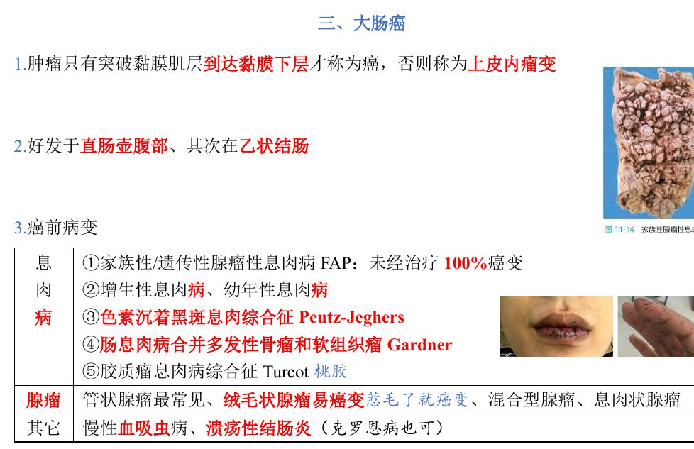
📷 讲义原图 · P7 · 大肠癌
A型·单选Q28P7 · 大肠癌
大肠癌最好发的部位是
答案与解析
答案：A
好发：直肠壶腹部，其次乙状结肠。
📖 讲义定位：P7 · 大肠癌
X型·多选Q29P7 · 大肠癌癌前病变
与大肠癌发生有关的病变有
答案与解析
答案：ABC
癌前病变：FAP（未治疗 100% 癌变）及其它息肉病（增生性息肉病、幼年性息肉病、Peutz-Jeghers、Gardner、Turcot）；腺瘤（管状最常见、绒毛状易癌变）；慢性血吸虫病、溃疡性结肠炎（克罗恩病也可）。普通单发增生性息肉与癌关系不密切（D 错）。
📖 讲义定位：P7 · 大肠癌癌前病变
A型·单选Q30P7 · 腺瘤
大肠腺瘤中，最常见者与最易癌变者分别是
答案与解析
答案：C
管状腺瘤最常见；绒毛状腺瘤易癌变。
📖 讲义定位：P7 · 腺瘤
A型·单选Q31P7 · FAP
家族性腺瘤性息肉病（FAP）的特点是
答案与解析
答案：A
FAP：未经治疗 100% 癌变（与 APC 基因相关）。
📖 讲义定位：P7 · FAP
A型·单选Q32P8 · 中晚期大肠癌
中晚期大肠癌最多见的大体类型是
答案与解析
答案：C
溃疡型最多见（直肠癌以溃疡型最多见）。
📖 讲义定位：P8 · 中晚期大肠癌
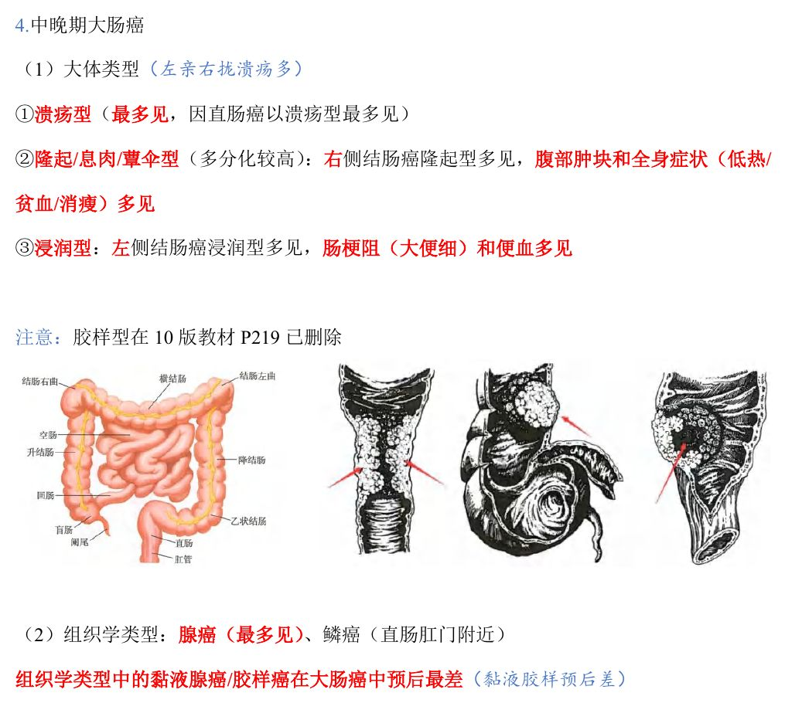
📷 讲义原图 · P8 · 中晚期大肠癌
A型·单选Q33P8 · 中晚期大肠癌
右侧结肠癌多见的类型和临床特点是
答案与解析
答案：D
右（右侧结肠）：隆起型多见、肿块＋全身症状；左侧结肠癌：浸润型多见、梗阻（大便细）＋便血。
📖 讲义定位：P8 · 中晚期大肠癌
A型·单选Q34P8 · 中晚期大肠癌
左侧结肠癌多见的类型和临床特点是
答案与解析
答案：B
左侧：浸润型、梗阻＋便血。
📖 讲义定位：P8 · 中晚期大肠癌
A型·单选Q35P8 · 大肠癌组织学
大肠癌中组织学类型预后最差的是
答案与解析
答案：C
黏液腺癌/胶样癌在大肠癌中预后最差。
📖 讲义定位：P8 · 大肠癌组织学
A型·单选Q36P8 · 大肠癌基因
与遗传性非息肉病性大肠癌（Lynch 综合征）相关的基因是
答案与解析
答案：A
错配修复基因 MLH/MSH→Lynch 综合征；APC→FAP；原癌 c-MYC/RAS/BRAF；抑癌 p53/p16/APC/DCC/MCC/DPC。
📖 讲义定位：P8 · 大肠癌基因
A型·单选Q37P8 · 大肠癌基因
下列属于大肠癌相关抑癌基因的是
答案与解析
答案：B
抑癌基因：p53、p16、APC、DCC、MCC、DPC；原癌基因：c-MYC、RAS、BRAF。
📖 讲义定位：P8 · 大肠癌基因
A型·单选Q38P8 · Dukes 分期
Dukes 分期中，B2 期指的是
答案与解析
答案：D
Dukes：D 黏膜内（100%）；B1 未穿透肌层、无淋巴结（67%）；B2 穿透肠壁、无淋巴结（54%）；C1 未穿透、有淋巴结（43%）；C2 穿透、有淋巴结（22%）；B 远处转移。
📖 讲义定位：P8 · Dukes 分期
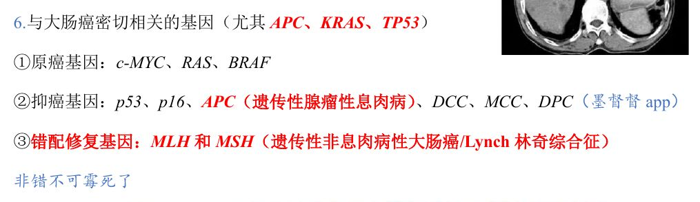
📷 讲义原图 · P8 · Dukes 分期
X型·多选Q39P8 · 大肠癌
关于大肠癌，下列叙述正确的有
答案与解析
答案：ACD
B 错：右侧结肠癌以隆起型多见，浸润型多见于左侧结肠癌。
📖 讲义定位：P8 · 大肠癌
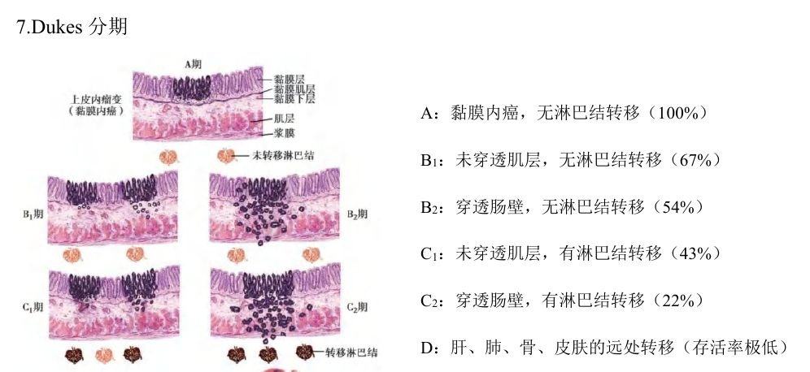
📷 讲义原图 · P8 · 大肠癌
本课速记卡
食管癌
- 好发：三个生理性狭窄部、胸中段最多见
- 早期：未侵肌层、无论有无淋巴结转移；原位癌＋黏膜内癌＋黏膜下癌
- 中晚期大体：髓质型（最多见、软）、蕈伞型、溃疡型（不易梗阻）、缩窄/硬化型（梗阻）
- 组织学：鳞癌最多见；腺癌←Barrett 食管（癌前病变，需定期胃镜）
胃癌
- 好发：胃窦小弯侧
- 危险因素：异型增生、Hp、亚硝胺、慢性萎缩性胃炎（结肠型不完全肠化）、胃腺瘤性息肉
- 早期：未侵肌层；凹陷型（最多见）、隆起型、表浅型；微小癌≤5mm、小胃癌6–10mm、一点癌
- 中晚期大体：溃疡型（最多见）、息肉/蕈伞型、浸润型（弥漫→革囊胃，预后最差）
- 组织学：腺癌最多见；黏液腺癌（＞50%黏液、胶冻样）；印戒细胞癌（低黏附性）
- 转移：淋巴最早最常见（Virchow＝左锁骨上）；血道→肝；印戒细胞癌种植→双卵巢（Krukenberg 瘤）
胃癌溃疡型 VS 胃溃疡（对比要点）
| 项目 | 胃溃疡 | 胃癌（溃疡型） |
|---|
| 龛影 | 轮廓之外 | 轮廓之内 |
| 边缘 | 整齐、不隆起 | 不整齐、隆起 |
| 黏膜皱襞 | 放射状集中 | 中断、结节状肥厚 |
| 大小/底部 | 多＜2cm、较平坦 | 多＞2cm、凹凸不平 |
| 胃酸 | 正常或↓ | 明显↓（缺乏） |
大肠癌
- 癌的界定：突破黏膜肌层达黏膜下层；否则为上皮内瘤变
- 好发：直肠壶腹部，其次乙状结肠
- 癌前：FAP（100% 癌变）等息肉病；管状腺瘤（最常见）/绒毛状腺瘤（易癌变）；溃疡性结肠炎等
- 大体：溃疡型（最多见）；右侧→隆起型＋肿块/贫血；左侧→浸润型＋梗阻/便血
- 组织学：腺癌最多见（黏液腺癌/胶样癌预后最差）
- 基因：原癌 c-MYC/RAS/BRAF；抑癌 p53/p16/APC/DCC/MCC/DPC；错配修复 MLH/MSH→Lynch 综合征
Dukes 分期
| 分期 | 含义 | 生存率 |
|---|
| A | 黏膜内，无淋巴结转移 | 100% |
| B1 | 未穿透肌层，无淋巴结转移 | 67% |
| B2 | 穿透肠壁，无淋巴结转移 | 54% |
| C1 | 未穿透肌层，有淋巴结转移 | 43% |
| C2 | 穿透肠壁，有淋巴结转移 | 22% |
| D | 肝/肺/骨/皮肤远处转移 | 极低 |
📚 网站题库（导入）7 组 · 15 题
说明：本部分为外部题库导入（来源：「西综题库」网站 · 病理学），题干、选项与答案保留原样；标注「教师补充」的答案未经讲义逐项复核。做题方式：点字母选择（多选后点【判卷】；答案可点开「答案与出处」查看）。
大肠癌癌前病变与腺瘤B型题
A 家族性/遗传性腺瘤性息肉病
B Turcot综合征（胶质瘤-息肉病综合征）
C 色素沉着黑斑息肉综合征
D 管状腺瘤
E 克罗恩病
F 慢性血吸虫病
G 幼年性息肉
H 增生性息肉病
I 混合型腺瘤
J 息肉状腺瘤
K 增生性息肉
L 幼年性息肉病
M 溃疡性结肠炎
N 肠息肉病合并多发性骨瘤和软组织瘤
O 绒毛状腺瘤
网站题W1第5讲 · 第5页
大肠癌的癌前病变
答案与出处
答案：ABCDEFHIJLMNO
📖 第5讲 · 第5页
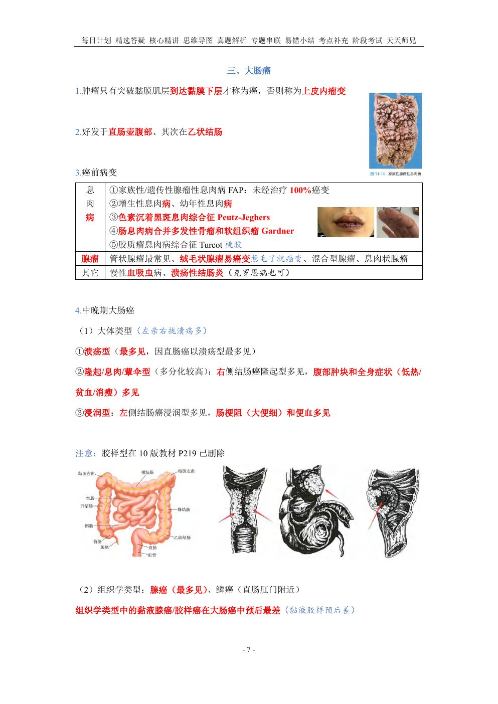
📷 讲义原图 · 第5讲 · 第5页
网站题W2第5讲 · 第5页
腺瘤中最常见的是
答案与出处
网站题W3第5讲 · 第5页
腺瘤中易癌变的是
答案与出处
与大肠癌密切相关的基因B型题
A DPC
B RAS
C MSH
D p53
E MCC
F APC
G c-MYC
H DCC
I BRAF
J MLH
K p16
网站题W4第5讲 · 第6页
原癌基因
答案与出处
答案：BGI
📖 第5讲 · 第6页
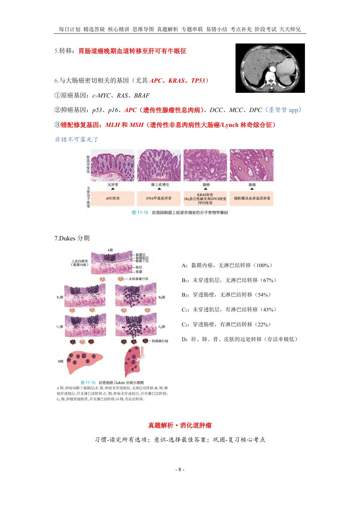
📷 讲义原图 · 第5讲 · 第6页
网站题W5第5讲 · 第6页
抑癌基因
答案与出处
网站题W6第5讲 · 第6页
错配修复基因
答案与出处
网站题W7第5讲 · 第6页
与大肠癌关系最密切的三个基因
答案与出处
网站题W8第5讲 · 第6页
与遗传性腺瘤性息肉病相关的基因
答案与出处
网站题W9第5讲 · 第6页
与遗传性非息肉病性大肠癌/Lynch综合征相关的基因
答案与出处
胃溃疡B型题
A 黏膜皱襞呈放射状向溃疡集中
B 外形为火山口或皿状
C 龛影位于胃腔轮廓之内
D 底部较平坦
E 大小多<2cm
F 周围黏膜皱襞中断，结节状肥厚
G 深度较浅（与胃溃疡相比）
H 胃酸多正常或↓
I 外形为圆形或椭圆形
J 胃酸明显↓（缺乏）
K 龛影位于胃腔轮廓之外
L 边缘不整齐，隆起
M 深度较深
N 底部凹凸不平，坏死出血明显
O 边缘整齐、不隆起
P 大小多>2cm
网站题W10第5讲 · 第4页
胃溃疡
答案与出处
答案：ADEHIKMO
📖 第5讲 · 第4页
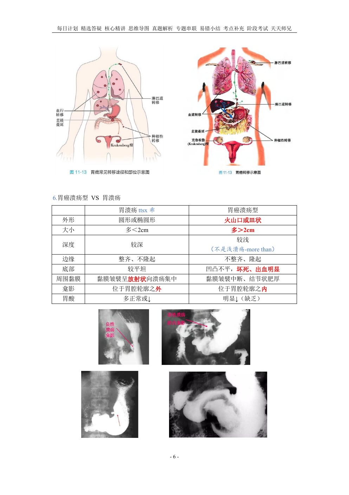
📷 讲义原图 · 第5讲 · 第4页
网站题W11第5讲 · 第4页
胃癌溃疡型
答案与出处
以下关于食管癌的描述中,错误的有多项选择教师补充
A 好发部位在食管上段
B 早期癌可有淋巴结转移
C 中晚期癌以溃疡型最多见
D Barrett 食管恶变为食管腺癌
网站题W12第5讲 · 第5页
以下关于食管癌的描述中,错误的有(多选)
答案与出处
早期胃癌的大体类型有多项选择教师补充
网站题W13第5讲 · 第2页
早期胃癌的大体类型有(多选)
答案与出处
答案：ABC
📖 第5讲 · 第2页
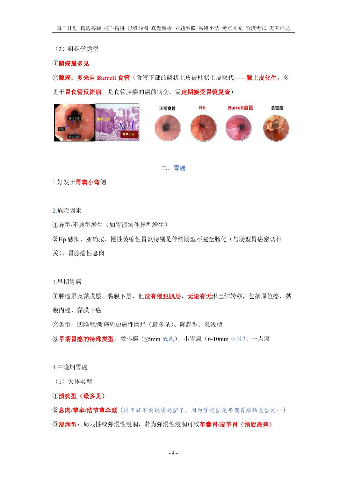
📷 讲义原图 · 第5讲 · 第2页
与结直肠癌发生关系较密切的分子机制通路有多项选择教师补充
A 染色体不稳定性通路
B 微卫星不稳定性通路
C VHL肿瘤抑制通路
D CpG岛甲基化表型
网站题W14第5讲 · 第8页
与结直肠癌发生关系较密切的分子机制通路有(多选)
答案与出处
答案：ABD
📖 第5讲 · 第8页
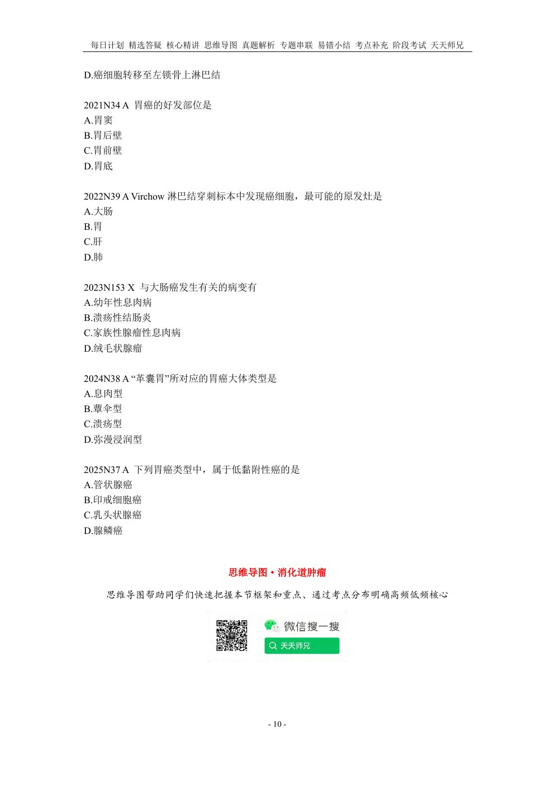
📷 讲义原图 · 第5讲 · 第8页
WHO对结直肠癌的定义标准为肿瘤组织只有侵入哪层结构才称为癌单项选择教师补充
网站题W15第5讲 · 第5页
WHO对结直肠癌的定义标准为肿瘤组织只有侵入哪层结构才称为癌(单选)
答案与出处
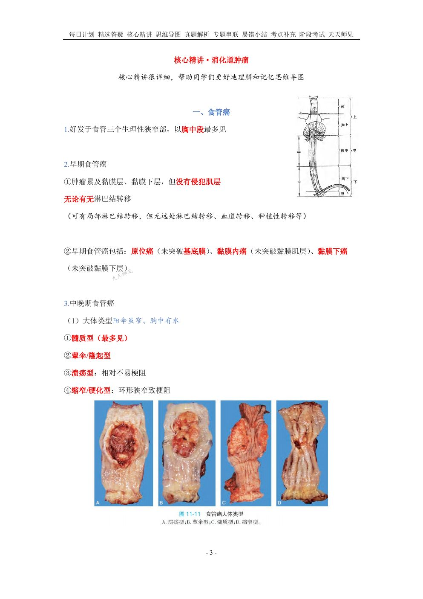
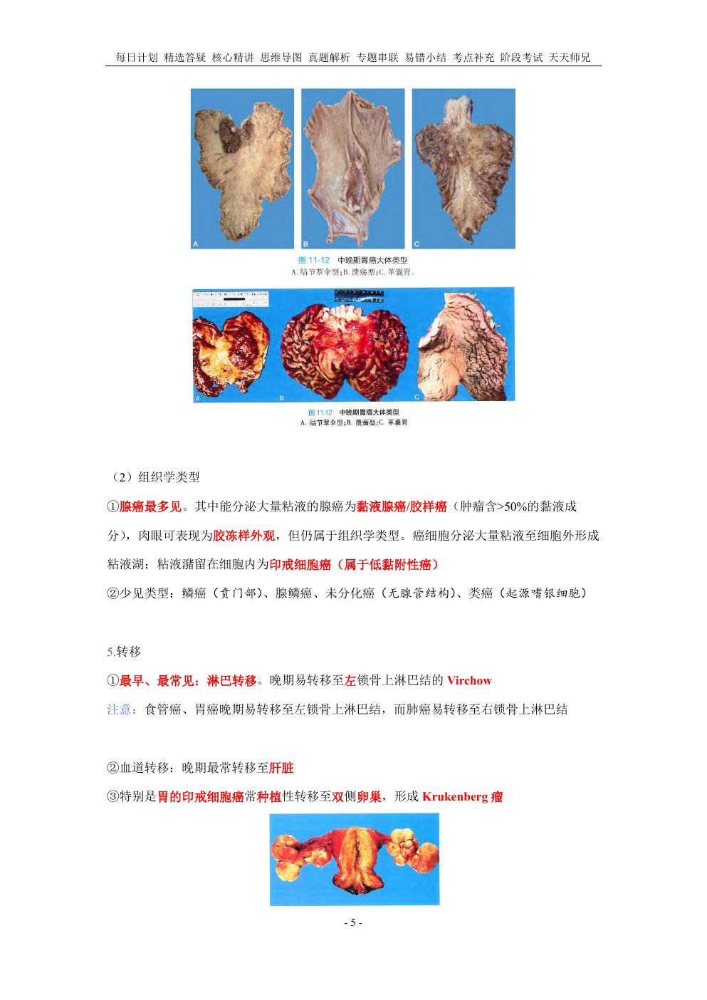
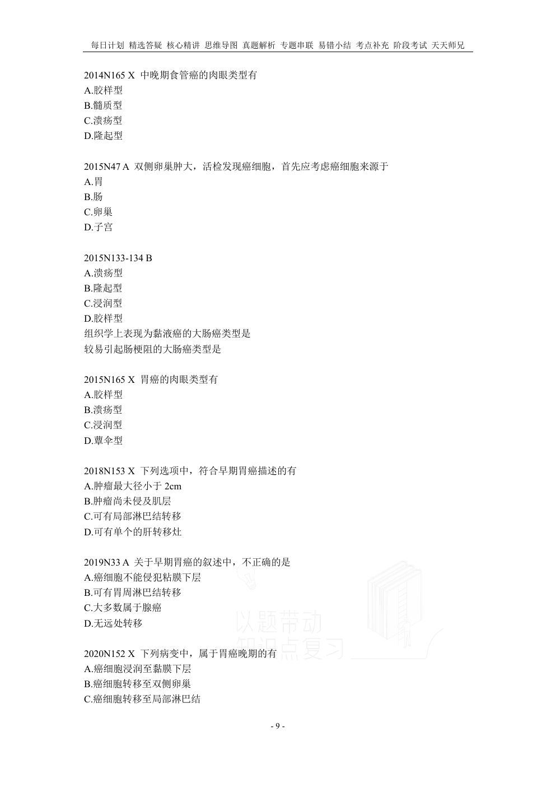